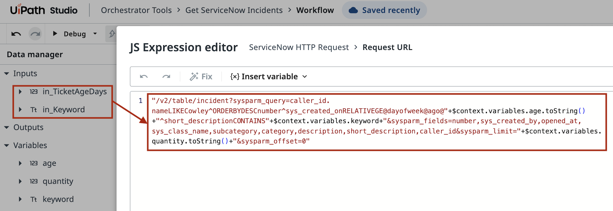
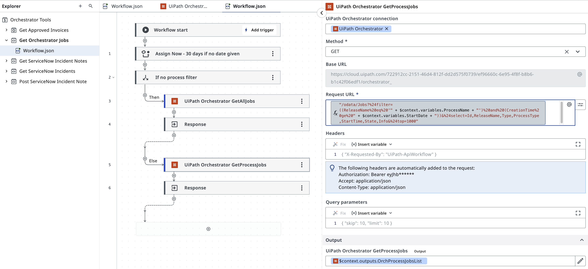
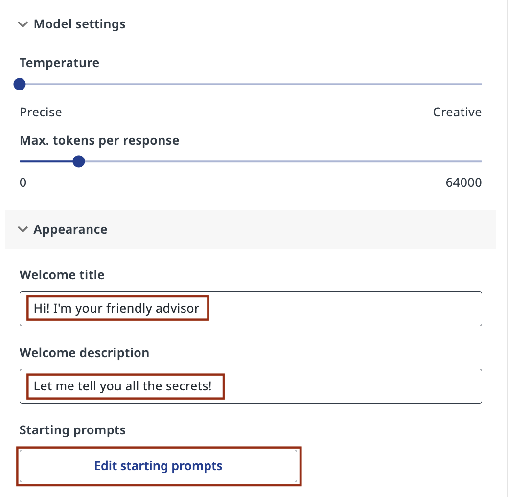
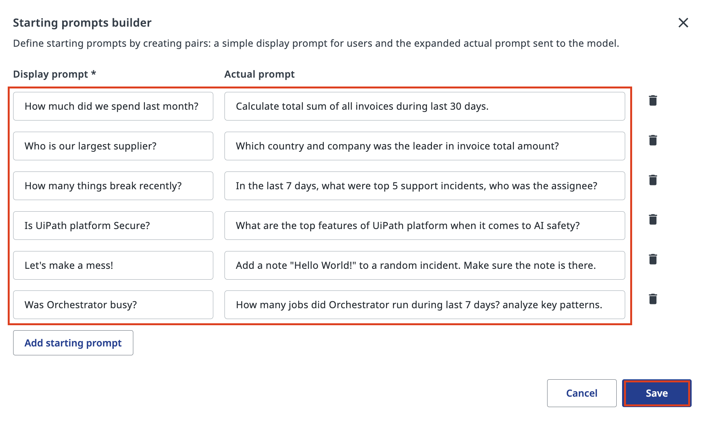

了解可用工具¶
这节课的计划如下：
- 在 Studio Web 中找到 Orchestrator Tools 模板
- 打开工作流，了解它们的类型、结构，以及内部如何处理数据
- 查看工具参数（输入和输出）
- 在智能体的 Appearance（外观）设置中配置起始提示词
目标¶
在这节课中，你将通过查看源代码来探索智能体可用的工具。我们添加的这些工具是预先构建好的自动化（RPA 与 API 工作流），你的智能体可以调用它们——了解它们做什么、需要什么数据（输入）、返回什么数据（输出），是正确配置和使用智能体的关键。
什么是工具？¶
工具是在 Studio Web 中构建、发布到 Orchestrator 的 Orchestrator Tools 文件夹里的可复用自动化。当你的智能体需要做某件事——查询 Data Fabric 获取发票数据、列出 ServiceNow 事件，或者给某个事件添加备注——它会根据工具描述找到最匹配的工具并运行它。你在这里看到的工具都很简单，但它们可以是 Orchestrator 中任何你想开放给聊天机器人的现有组件，包括 UI 自动化或 Integration Service 活动。
无论哪种情况，每个工具都有一个工作流（Workflow）（内部的自动化逻辑）、输入（Inputs）——工具执行所需的数据，以及输出（Outputs）——工具返回给智能体的数据。
输入参数的数据每次都是根据 Argument Descriptions（参数描述）和 Prompts（提示词）生成的——这就是你必须认真写描述的原因。工具调用会在后台创建一个 Orchestrator 作业（Job），并等待作业完成后的结果。随后智能体审阅结果，继续向目标推进，或者达成目标并结束自己的执行。
在配置智能体之前先审查这些工具，你就会明白你的章鱼智能体能做些什么。
操作步骤¶
1. 找到 Orchestrator Tools 模板¶
在 Studio Web 中，点击 Templates（模板）标签页，浏览可用的起始模板。
搜索“orchestrator tool”，找到 Orchestrator Tools Template——一个包含常用自动化工具的预构建解决方案。
打开模板卡片上的三点菜单，选择 New solution from template（从模板新建解决方案）。你不需要发布它，因为这些工具已经部署在 Orchestrator 中了。你只是要查看源代码。

2. 查看 API 工作流¶
模板解决方案加载后，在左侧 Explorer 面板中展开 Orchestrator Tools 文件夹。
你会看到可用工具的列表。先选择名为 Get ServiceNow Incident Notes 的 API 工作流。

选择工具文件夹下的 Workflow.json，查看其中的自动化步骤。
ServiceNow 工具会动态构建请求。ServiceNow HTTP Request 中有一个 JS 表达式，它清楚地展示了 API 查询 URL 是如何由工具的输入参数拼出来的。API 响应会被解析后作为输出发送，再返回给智能体。

像 Get Orchestrator Jobs 这样的 API 工作流原理相同，只是它对话的对象是 Orchestrator 而不是 ServiceNow。它按流程名称和时间范围过滤作业。注意这个特殊的日期格式，以及你如何在参数描述里指导智能体：

3. 审查 RPA 工具¶
打开 Get Approved Invoices——一个从 Data Fabric 读取数据的 RPA 工作流：

打开 Data Manager 面板，查看这个工具的配置。
这些参数明确告诉你智能体调用这个工具时会发生什么。智能体会把数据传给输入，并从输出接收数据。思路基本一致。

4. 配置智能体外观¶
在正式测试之前，先添加一条欢迎语，并推荐一些智能体擅长回答的提示词——这是个好习惯。打开智能体的配置，填写 Appearance（外观）部分：
设置 Welcome title（欢迎标题）和 Welcome description（欢迎描述），然后点击 Edit starting prompts（编辑起始提示词），定义聊天界面中显示的推荐问题。
起始提示词会以可点击的气泡形式出现在聊天界面中。它们既是快速发起常见测试对话的捷径，也能给最终用户一个有用的起点。

每一行有两个字段：用户看到的简短 Display prompt（显示提示词），以及实际发送给模型的完整 Actual prompt（实际提示词）。显示提示词要简短友好；把真正的细节写进实际提示词里。
完成后点击 Save。

你的智能体现在可以放心使用这些工具了——来试一试吧！